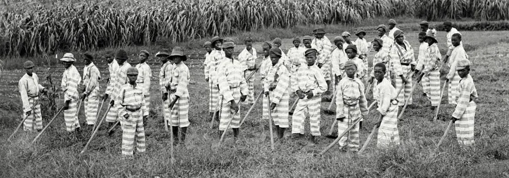

HIST 101 · Chapter 12 · Lecture 4
Children's Rights Movement: A History of Advocacy and Protection
From the Moral Family to Civil Society
Conflicting Images of Children
Philosophical Foundations
Enlightenment triumphs over original sin
- John Locke's tabula rasa: Children are blank slates shaped by environment and experience.
- Primacy of Environment: Alter character by providing proper environment
Rise of Romanticism
- Rousseau's romantic innocence: Childhood as a sacred stage of natural purity that must be protected.
- Sentimentalization of children used to rouse public opinion
Ethos of Individualism (self-reliance and discipline)
- creation of public schools and institutions
Together, these ideas suggested environment and education could produce virtuous citizens.
Practical Applications
- Moral psychology: Proper discipline combined with affection forms character.
- Institution building: Schools, reformatories, and orphanages as engines of moral engineering.
Ideas reframed childhood as improvable through environment and care—driving optimism about human reform.
Industrialization, Urbanization, and the Crisis of Childhood
- Industrial labor and child poverty (mills, mines, glassworks).
- Immigration and urban overcrowding concentrate poverty.
- "Street Arabs" / "Street Rats"; ≈30,000 homeless children in NYC by 1850s.
- Reformers warned of a "terrible social crisis."
- Civil society awakens: churches & charities mobilize.
Rapid urbanization created visible crises that demanded organized response.
The "discovery" of childhood poverty sparked a national reform movement.

Houses of Refuge & Reform Schools (1825–1900)
Public Schools
- We already learned about the Common School crusade in Lecture 2 (Slides 21–32): Horace Mann's tax-funded classrooms
Origins & Philosophy
Youthful lawbreakers could be remolded
- First House of Refuge: New York, 1825.
- Alternative to adult prisons for children.
- stressed rigorous discipline, education, and hard work
- offered basic education and "such employments as will tend to encourage industry"
Granted Broad Charters
- “all such children who should be convicted of criminal offenses… and rogues, vagabonds, common beggars, and other idle, disorderly, or lewd persons.”
Parens Patriae
- Ex parte Crouse (1838): Parents' and rights and children's rights to due process could be overridden for child's "welfare."
Reform schools claimed benevolent purpose but operated like prisons.

"The object of the charity is reformation, by training its inmates to industry; by imbuing their minds with principles of morality and religion."
—Pennsylvania Supreme Court, Ex parte Crouse (1838)
Girls in Moral Reform: Child Prostitution & “Fallen Women”
- Due to Urban poverty and exploitation, many destitute girls forced into prostitution.
- Magdalene & Female Moral Reform Societies: rescue, repentance, rehabilitation.
- Institutions:
- First Stand Alone Female Reformatory – Boston Female Moral Reform Society's Home (1833)
- New York House of Mercy (1855)
Women-led organizations pioneered rescue but enforced Victorian purity.

Age of Consent Reform: Protecting Girls from Sexual Exploitation
The Problem (Mid-19th Century)
- Age of consent as low as 7–10 years in most states
- Girls could be legally married or sexually exploited with minimal protection
- Double standard: girls blamed for "seduction," men rarely prosecuted
Age of consent laws codified the idea that children—especially girls—needed legal protection from adult exploitation.
Reform Campaigns (1880s–1910s)
- Women's Christian Temperance Union (WCTU) leads national campaign
- Frances Willard: "Organize the motherhood of the world"
- 1885–1905: Most states raise age to 16–18
- Framed as protecting female virtue and childhood innocence
Major victory: women exercised political power before they could even vote.

Charles Loring Brace
- Son of prominent Connecticut family
- Goes to New York to study theology
- Horrified at circumstances of street children
- Establishes Children's Aid Society
- Creates industrial schools, finds jobs for idle boys, newsboys lodging house
The Children's Aid Society (1853)
Unable to raise sufficient funds to care for all those in need
"Placing Out" -- Put up for adoption
- send groups of children west; farmers take in children
- Children now in better environments; Good Christian Homes
- Drain city of "street Arabs;" fulfill need for labor in the country
The Orphan Trains (1854–1929)
- ≈200,000 children sent West between 1854–1929.
- Some found loving homes; others faced exploitation and abuse.
First time reformers place interests of child before those of natal family!

"The class of a large city most dangerous to its property, its morals, and its political life, are the ignorant, destitute, untrained, and abandoned youth."
—Charles Loring Brace, The Dangerous Classes of New York (1872)
Orphan Trains: The Shadow Side
- 1865–1870 Southern “apprentice” laws bind 40,000+ Black orphans to former slave-owners — legal re-enslavement.
- 1879–1934 Federal Indian Boarding Schools: 100,000 Native children forcibly removed; motto “Kill the Indian, Save the Man.”
- 1854–1929 Orphan Trains refuse Catholic & Jewish children in Protestant towns; Irish kids re-labeled “incorrigible.”
- Result: the same reformers who “saved” white street arabs built pipelines to plantation, reservation, and reformatory for children of color.
Shadow Truth
Child “protection” was never color-blind.
The train west for white orphans was the chain south or the wagon north for Black and Native children.
Child “protection” was never color-blind.
The train west for white orphans was the chain south or the wagon north for Black and Native children.


“We were taken from our mothers and put on the train with numbers pinned to our coats.”
—Mary Englund, Orphan Train rider, 1980 oral history
The Mary Ellen Moment, 1874–1875
- 9 April 1874 — Etta Wheeler carries a scarred, chained 10-year-old out of a Hell's Kitchen tenement.
- 21 April 1874 — Judge rules: a living child can be removed by habeas corpus.
- 15 Dec 1874 — New York Society for the Prevention of Cruelty to Children chartered ("The Cruelty").
- First agency on earth with police powers to enter homes and seize abused children.
- By 1910 → 250 sister societies nationwide.
One whip-scarred girl + one courtroom photograph = the legal invention of child protective services.
Private charity became public authority in eight months.
Moral outrage → statute → badge → CPS.
Moral outrage → statute → badge → CPS.

"Mama has been in the habit of whipping me with a rawhide and scissors."Learn More Here
—Mary Ellen Wilson, testifying in her own tiny voice, 10 April 1874
Jacob Riis: Making Invisible Problems Visible
Jacob Riis (1849–1914)
Danish immigrant → police reporter → social reformer
The Problem: The SPCC could rescue individual children, but couldn't change the structural conditions that endangered thousands.
What the SPCC Couldn't Fix
- The tenement system itself
- Endemic poverty
- No playgrounds or parks
- Unregulated child labor
- Overcrowded schools
Riis began photographing in 1887–88, over a decade after Mary Ellen Wilson.
The children were still there.
The children were still there.

"Long ago it was said that 'one half of the world does not know how the other half lives.' That was true then. It did not know because it did not care."
—Jacob Riis, How the Other Half Lives (1890)
Revolutionary and Dangerous: Flash Powder Photography
The Technology of Exposure
Flash powder = magnesium powder + potassium chlorate
- Ignited with match → brilliant explosive flash
- Thick, choking smoke filled rooms
- Only available since mid-1880s
The Risks
- Set at least 2 documented fires
- Blew out windows
- Terrified subjects
- Sometimes chased from buildings
Why it mattered: First time windowless interior rooms could be photographed—spaces middle-class reformers had never seen.

The worst conditions were in interior rooms with no windows, no light—spaces that had literally never been photographed before Riis.
Photography and Structural Reform
Riis's Reframing
Old question: "Which parents are neglecting their children?"
New question: "How can ANY parent raise children in these conditions?"
New question: "How can ANY parent raise children in these conditions?"
Concrete Reforms Achieved
- Tenement House Act (1901) — mandated ventilation, sanitation, fire safety
- Playgrounds & parks — created in tenement districts
- Child labor reform — momentum for regulation
- School expansion — more facilities in poor neighborhoods
Photography's Power
- Made invisible problems visible
- Provided undeniable visual evidence
- Combined facts with emotional appeal
Legacy
- Model for Progressive Era reform
- Lewis Hine built on his foundation (1908–1918)
- Settlement house movement adopted similar methods
These reforms changed the environment for ALL children, not just rescued individuals.
From individual rescue → structural transformation.
From individual rescue → structural transformation.
The First Juvenile Court: Cook County, Illinois (1899)
Revolutionary Principles
- Children not tried as criminals—treated as "wards" of the state.
- Judge acts in loco parentis (in place of parents).
- Focus on rehabilitation, not punishment.
- Informal proceedings; no jury trials.
- Probation instead of incarceration when possible.
The Chicago Model Spreads
- By 1925: juvenile courts in every state.
- Progressive reformers see this as triumph of scientific child-saving.
- Critics note: children lose due process rights in the name of protection.
Juvenile courts embodied Progressive faith that expertise could reform society.
The juvenile court system represented both genuine progress and new forms of state control over children and families.

"The child is not prosecuted for a crime; the child is protected from a condition."
—Judge Richard Tuthill, opening day, July 3, 1899
Child-Labor Reform Milestones, 1904–1938
- 1904 National Child Labor Committee (NCLC) founded in NYC; Lewis Hine hired to photograph "the shame of the states."
- 1910 Hine's photos of 8-year-olds in coal breakers and cotton mills printed in every major magazine.
- 1916 Keating-Owen Act bans interstate sale of goods made by children under 14 (or 16 in mines).
- June 3, 1918 Supreme Court strikes it down in Hammer v. Dagenhart ("Congress cannot regulate local labor").
- 1938 Fair Labor Standards Act (FLSA) survives court challenge; sets first federal floor: 16 for regular work, 18 for hazardous.
1904 → 1916 → 1918 → 1938
One Lewis Hine photograph → one federal law → one permanent childhood.
One Lewis Hine photograph → one federal law → one permanent childhood.
Child labor did NOT vanish in 1850. It took 34 years of lobbying, photography, and two Supreme Court defeats to outlaw it nationwide.

"I'm 12. I been workin' here two years. I like it."
—Addie Card to Lewis Hine, 1910
Gilded-Age Nationalization: The WCTU "Do Everything" Revolution
- Frances Willard (WCTU president 1879–1898) turned temperance into a total social gospel.
- "Do Everything" platform: child labor laws, kindergartens, age-of-consent reform, juvenile courts, suffrage.
- 1886–1905: WCTU raises statutory rape age from 10 to 16 in forty states.
- 1899 Illinois Juvenile Court Act—first children's court—drafted with WCTU lobbyists.
- 1904 National Child Labor Committee founded in WCTU offices.
Willard's motto: "Organize the motherhood of the world."
Women's moral networks became the scaffolding of the 20th-century welfare state.
WCTU & Frances Willard
- Founded 1874, Cleveland. World's largest women's organization by 1890.
- Willard's alliances: Prohibition Party, Knights of Labor, NAWSA.
- Laid groundwork for 18th Amendment (1919) and 19th Amendment (1920).
Conclusion: The Legacy of Children's Rights Reform
Achievements
- Childhood recognized as a distinct life stage requiring protection.
- Legal reforms: juvenile courts, child labor laws, compulsory education.
- New institutions: orphanages, foster care, social work professions.
- Shift from family sovereignty to state responsibility for child welfare.
Ongoing Questions
- How much state power over families is justified?
- Who decides what's in a child's "best interest"?
- Do children have rights independent of their parents?
- How do class and race shape who gets "protected" vs. punished?
The children's rights movement transformed American society by making childhood a matter of public concern, not just private family business.
But reform was never neutral—it always reflected the values, prejudices, and power dynamics of the reformers themselves.